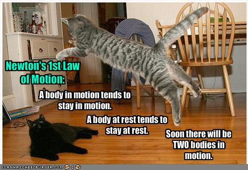
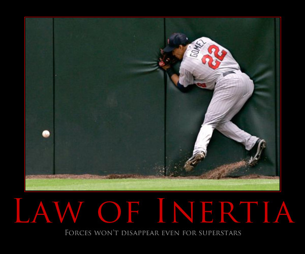
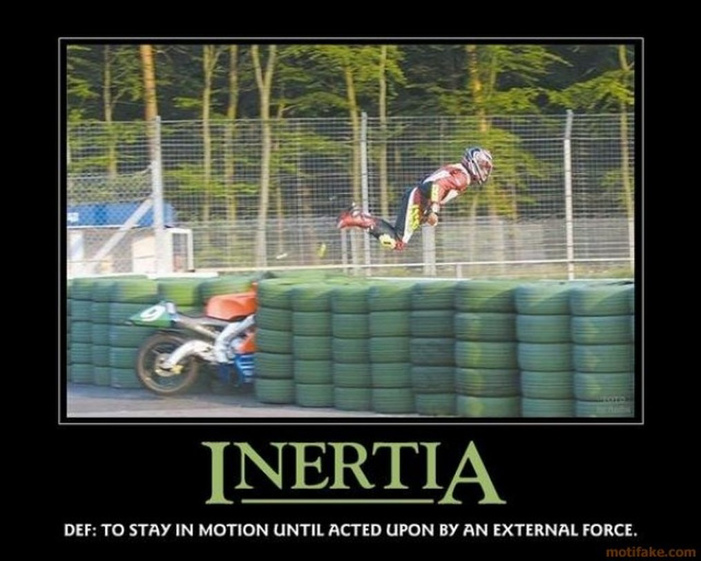
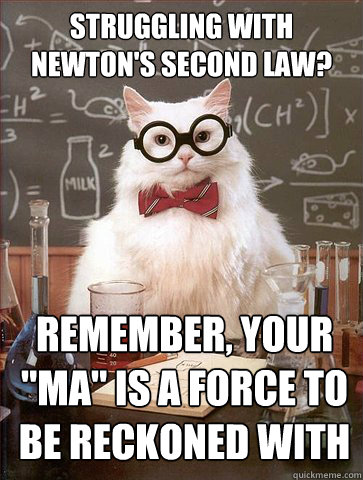
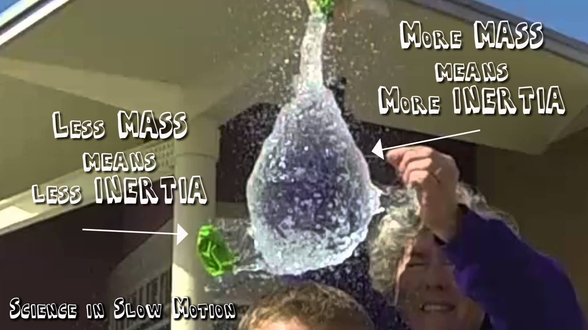

Romans 1:19
For what can be known about God is plain to them, because God has shown it to them.
Assignments this week (click me!)
Student Notebook hyperlinks for module 10:
p. 122 in the SNB: link.apologia.com/ECPS2N/10.1 Newton’s First Law webpage by NASA
Required Videos and Links:
Newton's Three Laws of Motion by Bozeman Science
Optional but Helpful:
Tablecloth Chaos - Mythbusters for the Impatient
Newton's Laws on PhysicsClassroom.com
This PhysicsClassroom.com link has more discussion on inertia.Sir Isaac Newton bio from Answers in Genesis – love the footnote use!
Vocabulary Flashcards on Quizlet
Module 10 flash cards






